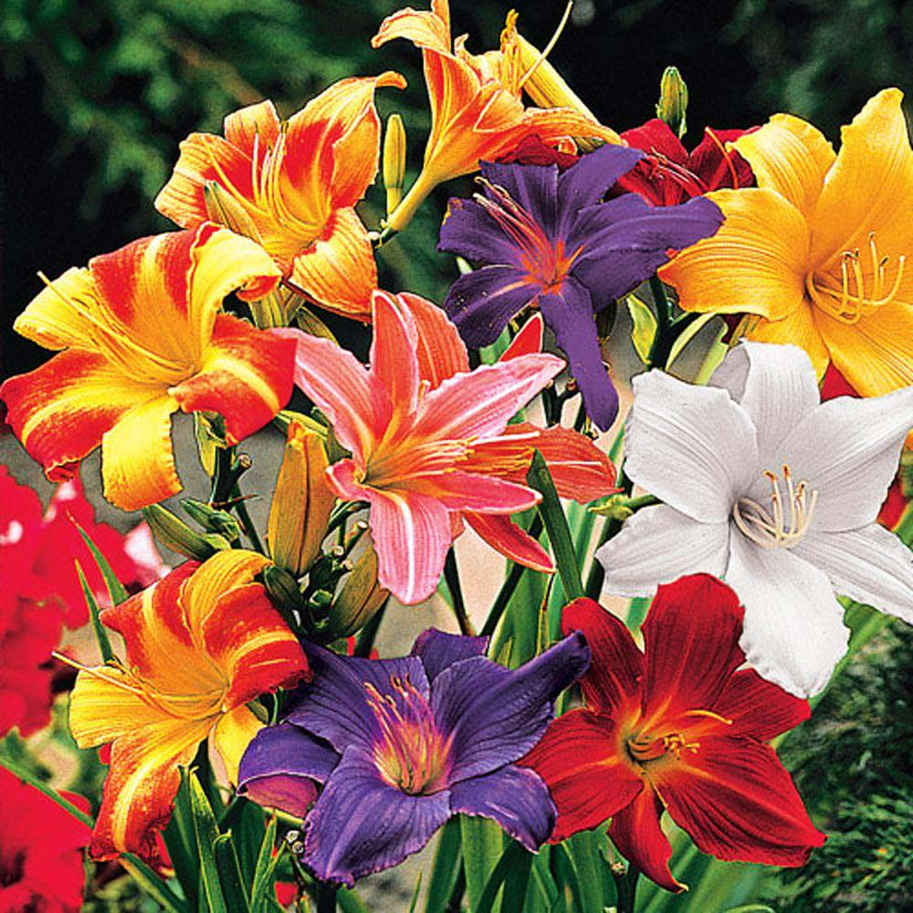

Plant Overview
Quick reference table: sun, soil, climate, and whether the plant is suitable for indoor growing.
| Picture | Name | Sun | Soil | Climate | Good for indoor? |
|---|---|---|---|---|---|
 |
Canterbury Bells | Full sun or partial shade | Moist, fertile, well-drained | Cool to temperate areas | No |
 |
Coneflowers (Echinacea) | Full sun | Well-drained, poor to average soil | Very hardy—heat and drought tolerant | No |
|  | Daylilies | Full sun or partial shade | Any well-drained soil | Extremely adaptable | No |
 |
Foxgloves | Partial shade | Moist, rich, well-drained | Cool or temperate climates | No |
 |
Zinnias | Full sun | Rich, well-drained | Warm climates, drought tolerant | No |
 |
Hollyhocks | Full sun | Rich, well-drained | Warm to temperate regions | No |
 |
Lavender | Full sun | Dry, sandy, well-drained | Hot, dry Mediterranean-type climates | Yes (very bright direct sunlight) |
 |
Marigolds | Full sun | Fertile, well-draining | Warm climates | No |
 |
Parsley | Full sun | Moist, rich, well-drained | Cool seasons preferred | Yes |
 |
Peonies | Full sun | Fertile, well-draining | Cold winters | No |
 |
Petunias | Full sun | Light, well-drained, slightly acidic | Warm (sensitive to cold) | Yes (indoor only) |
 |
Sunflower | Full sun | Loose, fertile soil | Warm and Dry | No |